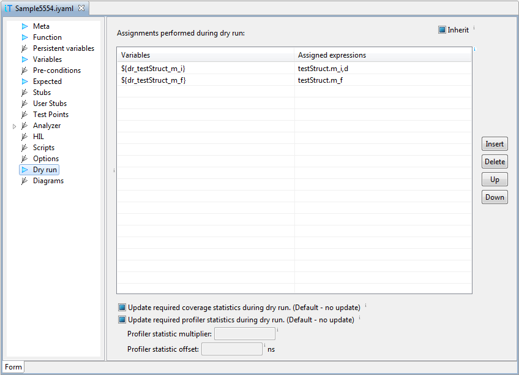

Dry run
This section contains assignments, which store values of variables
immediately after the test execution. These values are copied as
assignments to section Variables, and can therefore be used in the next
test runs.

This section is especially useful with automatic test case generation,
and an example of such usage is given in help section
Using Test Case Generator and Dry Run.